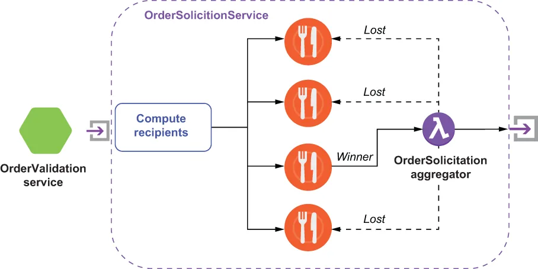

The splitter pattern is useful when you want to process different pieces of the message in parallel, and you already know in advance exactly how many elements you will have and that the number will remain static. However, there are situations where you cannot determine where the message will be routed ahead of time, and you must make that determination based on the content of the message itself and other external conditions. One such example is the OrderSolicitationService, which is one of the three microservices invoked by the OrderValidationService.
当你希望并行处理消息中不同的部分，并且事先就确切知道会有多少个元素、且这个数量会保持不变时，拆分器模式是很有用的。然而，也存在这样一些情况：你无法提前确定消息会被路由到哪里，而必须依据消息本身的内容以及其他外部条件来做出这个判断。OrderSolicitationService 就是这样一个例子，它是由 OrderValidationService 所调用的三个微服务之一。
This service notifies a subset of participating restaurants of incoming food orders they can fulfill and awaits a response from each of the restaurateurs as to whether or not they will accept the order, and if so, when it will be ready for pick up. Obviously, the list of restaurants is dependent on several factors. We want to route the orders based on the restaurants’ ability to provide the food (i.e., orders for Big Macs go to McDonalds, etc.). At the same time, we don’t want to indiscriminately broadcast the order to every single McDonald’s restaurant, so we narrow the list down based on their proximity to the delivery location. Since this list is constructed in response to each message, the recipient list pattern is the best choice.
这个服务会把 incoming 的、各家可履约的餐品订单通知给一部分入驻餐厅，并等待每位餐厅经营者给出响应，说明他们是否接受这笔订单，如果接受，又何时可以备好供取餐。显然，这份餐厅名单取决于若干因素。我们希望依据餐厅提供餐品的能力来路由订单（也就是说，巨无霸的订单要送到麦当劳，等等）。与此同时，我们也不想把这笔订单不加区分地广播给每一家麦当劳门店，因此我们依据它们与配送地点的接近程度来缩小这份名单。由于这份名单是针对每条消息临时构建的，接收方列表（recipient list）模式就成了最佳选择。
The overall flow of the OrderSolicitationService is depicted in figure 8.4, which consists of three distinct phases. The first phase computes the intended list of recipients based on the factors we’ve already discussed. During the second phase, the recipient list is iterated over, and the FoodOrder is forwarded to each recipient. The third and final phase is when the service awaits the responses from each of the recipients and selects a “winner” to fulfill the order. Once a winner is selected, all the other recipients are notified that they have “lost” and that the food order is no longer available.
OrderSolicitationService 的整体流程如图 8.4 所示，它由三个界限分明的阶段组成。第一阶段依据我们前面已经讨论过的那些因素，计算出目标的接收方名单。在第二阶段，系统会遍历这份接收方名单，并把 FoodOrder 转发给名单上的每一位接收方。第三阶段也即最后一个阶段，服务等待各位接收方的响应，并从中选出一个“赢家”来履约这笔订单。一旦选出赢家，其余所有接收方都会收到通知，告知它们“落选”了，这笔餐品订单已不再可接。

Figure 8.4 The topology of the OrderSolicitationService, which implements the dynamic router pattern
图 8.4 OrderSolicitationService 的拓扑，它实现了动态路由器模式
The actual implementation of this logic is shown in listing 8.3 and relies on the message properties to convey metadata that is critical for the aggregator. First of all, the order ID is included within the message to identify which FoodOrder the response is associated with. The all-restaurants property is used to encode all of the candidates that have been solicited for this order. Having this information in the message enables the aggregator to know all of the restaurants it needs to send the “you didn’t win” message to. The last piece of metadata contained within the message properties is the return-addr property, which contains the name of the topic the aggregator is subscribed to. This allows us to avoid having to hard-code this information into each message recipient’s logic, and instead, we can provide this information dynamically. This is an implementation of the return address pattern defined in Enterprise Integration Patterns.
这一逻辑的实际实现如清单 8.3 所示，它依赖消息属性来传递那些对聚合器至关重要的元数据。首先，消息中包含了订单 ID，用以标识该响应与哪一份 FoodOrder 相关联。all-restaurants 属性则被用来编码该订单所有已被征询过的候选餐厅。消息中带有这一信息，聚合器就能知道它需要向哪些餐厅发送“你没有中标”的消息。消息属性中包含的最后一项元数据是 return-addr 属性，它存放着聚合器所订阅的那个主题的名称。这让我们不必把这一信息硬编码进每个消息接收方的逻辑里，而是可以动态地提供它。这是《Enterprise Integration Patterns》中所定义的返回地址（return address）模式的一个实现。
Listing 8.3 The OverSolicitationService’s implementation of the recipient list pattern
public class OrderSolicitationService implements Function<FoodOrder, Void> {
private String rendevous = "persistent://resturants/inbound/accepted";
@Override
public Void process(FoodOrder order, Context ctx) throws Exception {
List<String> cand = getCandidates(order,
order.getDeliveryLocation()); ❶
if (CollectionUtils.isNotEmpty(cand)) {
String all = StringUtils.join(cand, ",");
int delay = 0;
for (String topic: cand) { ❷
try {
ctx.newOutputMessage(topic, AvroSchema.of(FoodOrder.class))
.property("order-id", order.getMeta().getOrderId() + "") ❸
.property("all-restaurants", all) ❹
.property("return-addr", rendevous) ❺
.value(order).deliverAfter( (delay++ * 10), TimeUnit.SECONDS); ❻
} catch (PulsarClientException e) {
e.printStackTrace();
}
}
}
return null;
}
private List<String> getCandidates(FoodOrder order, Address deliveryAddr) {
... ❼
}
}
❶ Build the recipient list based on the order and delivery address.
❶ 依据订单和配送地址构建接收方名单。
❷ Send the FoodOrder to every recipient in the list.
❷ 把 FoodOrder 发给名单中的每一位接收方。
❸ Use the order ID for correlation.
❸ 使用订单 ID 进行关联。
❹ Include all the restaurants so we can notify the losers.
❹ 把所有餐厅都包含进来，以便我们能通知那些落选者。
❺ Tell each recipient where to send their response message.
❺ 告诉每位接收方该把响应消息发到哪里。
❻ Stagger the delivery of the messages to minimize the number of rejected responses.
❻ 把这些消息的投递时间错开，以尽量减少被拒绝的响应数量。
❼ The logic to build the recipient list
❼ 构建接收方名单的逻辑。
The recipient list is returned in order of preference (e.g., the restaurant closest to the delivery location, the one that has received the least amount of business from us tonight, etc.), and we use Pulsar’s delayed message delivery capabilities to space out the solicitation requests. The goal of this is to minimize the number of times we need to reject a FoodOrder that was accepted by a restaurant. We don’t want to aggravate our participating restauranteurs by bombarding them with orders that they accept but are ultimately rejected. Therefore, we scale up the number of restaurants we notify slowly to prevent having too many outstanding solicitations at the same time.
这份接收方名单是按优先级顺序返回的（例如，离配送地点最近的那家餐厅、今晚从我们这里接单量最少的那家，等等），并且我们利用 Pulsar 的延迟消息投递能力把这些征询请求在时间上拉开。这样做的目标是尽量减少“我们不得不拒绝一份已被某家餐厅接受的 FoodOrder”的次数。我们不想用大量“接了单但最终被拒”的订单去轰炸入驻的餐厅经营者，以免惹恼他们。因此，我们会缓慢地增加所通知餐厅的数量，以避免同一时间存在过多悬而未决的征询。
Since the OrderSolicitationService can send the FoodOrder to multiple recipients, it will need to reconcile the responses and award the order to only one of the respondents. While there are many strategies available, for now it will just accept the first response. This reconciliation logic will be implemented using an aggregator similar to the one we used for the OverValidationService. As you can see in listing 8.3, I am using the message properties to pass along the name of the topic that each of the recipients should respond to. The corresponding aggregator should be configured to listen to this topic, so it receives the response messages and can notify the non-winning restaurants that the order has been awarded to a different restaurant. This restauranteur’s mobile application can then react to the non-winning notification by removing the order from view.
由于 OrderSolicitationService 可以把同一份 FoodOrder 发给多位接收方，它就需要对各个响应进行核对，并且只把这笔订单判给其中一位应答者。虽然可选的策略有很多，但目前它就只接受第一个响应。这段核对逻辑将用一个聚合器来实现，类似于我们为 OrderValidationService 所用的那个。正如你在清单 8.3 中所看到的，我利用消息属性来传递每一位接收方应当把响应发往的那个主题的名称。相应的聚合器应当被配置为监听这个主题，这样它就能收到那些响应消息，并能够通知未中标的餐厅：这笔订单已经判给了另一家餐厅。这位餐厅经营者的移动应用随后便可对这个未中标通知做出反应，把该订单从界面上移除。
Listing 8.4 The OverSolicitationService’s implementation of the aggregator pattern
public class OrderSolicitationAggregator implements Function<SolicitationResponse, Void> {
@Override
public Void process(SolicitationResponse response, Context context)
throws Exception {
Map<String, String> props = context.getCurrentRecord().getProperties();
String correlationId = props.get("order-id");
List<String> bids = Arrays.asList(
StringUtils.split(props.get("all-restaurants"))); ❶
if (context.getState(correlationId) == null) { ❷
// First response wins
String winner = props.get("restaurant-id"); ❸
bids.remove(winner); ❹
notifyWinner(winner, context); ❺
notifyLosers(bids, context); ❻
// Record the time we received the winning bid.
ByteBuffer bb = ByteBuffer.allocate(32);
bb.asLongBuffer().put(System.currentTimeMillis());
context.putState(correlationId, bb);
}
return null;
}
private void notifyLosers(List<String> bids, Context context) {
...
}
private void notifyWinner(String s, Context context) {
...
}
}
❶ Decode all the IDs of all the solicited restaurants.
❶ 解出所有被征询餐厅的全部 ID。
❷ First response back wins
❷ 最先回来的响应获胜。
❸ Get the restaurant ID of the winner from the response message.
❸ 从响应消息中取出获胜者的餐厅 ID。
❹ Remove the winner from the list of all restaurants.
❹ 把获胜者从全部餐厅的名单中移除。
❺ Send a message to the winning restaurant letting them know they won.
❺ 向获胜的那家餐厅发送消息，告知它们中标了。
❻ Send a message to all the non-winning restaurants.
❻ 向所有未中标的餐厅发送消息。
As you can see in listing 8.4, the correlation will still be done by the order ID, but the completeness criteria will be “first one wins” instead of waiting for a response from all the message recipients as we did for the splitter pattern. Even though we do our best to prevent sending multiple outstanding solicitation messages, the aggregator still needs to accommodate this scenario. It does so by retaining the time that the winning bid was received for each order. This allows the aggregator to ignore all subsequent responses for the same order, since we know that another restaurant has already been awarded the order. In order to prevent this data structure from growing too large and causing an out-of-memory condition, I have incorporated a background process that periodically wakes up and purges all records in the list that are older than a certain period of time, which can be determined by the timestamp of the winning bid.
正如你在清单 8.4 中所看到的，关联仍然是通过订单 ID 来完成的，但完整性判据变成了“先到者胜”，而不像拆分器模式那样等待所有消息接收方都给出响应。尽管我们已尽力避免同时发出多条悬而未决的征询消息，聚合器仍然需要应对这种情况。它采取的做法是：为每一笔订单保留下中标响应被收到的那个时间。这让聚合器可以忽略同一笔订单后续到达的所有响应，因为我们知道这笔订单已经判给了另一家餐厅。为了防止这个数据结构增长得过大并导致内存耗尽，我引入了一个后台进程，它会定期醒来，把列表中所有超过一定时限的记录清除掉——这个时限可以依据中标响应的时间戳来判定。